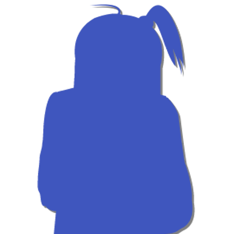
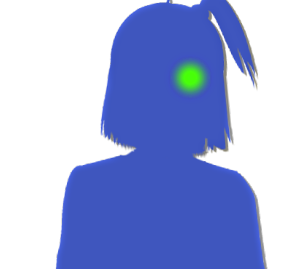
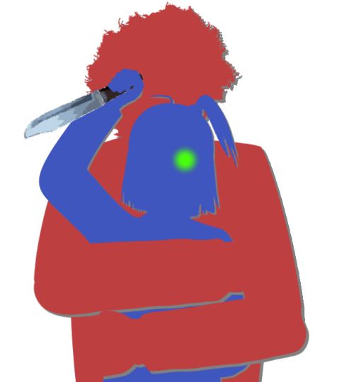

This scene is not unlocked yet in your progress
Out of Love...
Eiichiro vanished from my life.
Eiichiro―I wanted him to come back.
Eiichiro's feelings when he tried to save me, and how much he suffered.
Eiichiro―I wanted him to come back.
Eiichiro's feelings when he tried to save me, and how much he suffered.
I couldn't heal that heart of his.
No, I couldn't because it was me.
Eiichiro―is he doing well?
I want to know that much, at least... I want to know.
No, I couldn't because it was me.
Eiichiro―is he doing well?
I want to know that much, at least... I want to know.

"Eiichiro, huh..."
"Yeah..."
Now in high school, we talk about Eiichiro while we do the spring rice planting.
"Yeah..."
Now in high school, we talk about Eiichiro while we do the spring rice planting.

"He's doing well, I hear. Seems he's being a proper high school student."
"I see... I'm glad..."
If I can hear just that much, it's enough.
Eiichiro and I may not be able to meet, but it's enough just knowing he's well.
"I see... I'm glad..."
If I can hear just that much, it's enough.
Eiichiro and I may not be able to meet, but it's enough just knowing he's well.
"You...
still love Eiichiro?"
"What, what!?"
"What, what!?"
"Well?"
Right on the heels of those sudden words, Kotaro presses me further.
My heart is pounding, leaping around inside my chest.
Right on the heels of those sudden words, Kotaro presses me further.
My heart is pounding, leaping around inside my chest.
"Well what! Why would you ask something like that...!"
"You think I haven't noticed?"
"............"
"Sorry. If you don't want to, you don't have to say."
"You think I haven't noticed?"
"............"
"Sorry. If you don't want to, you don't have to say."
"............
Yeah...
I love him. Even now."
"I see."
"I see."
That single reply is all Kotaro gives before he goes back to silently planting seedlings.
My feet, soaking in the paddy, are chilly.
But deep in my chest, it's so hot.
My feet, soaking in the paddy, are chilly.
But deep in my chest, it's so hot.
I've been aware of my own feelings.
But I've never told anyone.
Eiichiro has never heard it, and neither has Kotaro.
So now that someone has said it out loud, my body is reacting violently.
My whole body is hot―
But I've never told anyone.
Eiichiro has never heard it, and neither has Kotaro.
So now that someone has said it out loud, my body is reacting violently.
My whole body is hot―
Eiichiro's feelings about me, whatever they were, I don't know.
But since he went away from me, then even if he did have feelings for me, he probably has no lingering attachment.
Love isn't something you can do alone, so I know I have no choice but to give up too.
I'm not the one who can heal Eiichiro.
In that case, the person I'm allowed to have feelings for is...
But since he went away from me, then even if he did have feelings for me, he probably has no lingering attachment.
Love isn't something you can do alone, so I know I have no choice but to give up too.
I'm not the one who can heal Eiichiro.
In that case, the person I'm allowed to have feelings for is...
What a brazen way to put it: 'the person I'm allowed to have feelings for.'
It's as if I'm the one in charge, drawing up how everyone's feelings fit together. How presumptuous.
If I'm having thoughts that presumptuous, I must be lonely.
It's as if I'm the one in charge, drawing up how everyone's feelings fit together. How presumptuous.
If I'm having thoughts that presumptuous, I must be lonely.
No, it isn't a feeling as pretty as loneliness.
I'm just starved.
He isn't here, so I'm starved.
I'm just starved.
He isn't here, so I'm starved.
I watch Kotaro as he plants seedlings, moving farther away from me.
Eiichiro and Kotaro look very much alike.
I can tell them apart by their expressions and the way they talk, but with blank faces, it's nearly impossible.
Eiichiro and Kotaro look very much alike.
I can tell them apart by their expressions and the way they talk, but with blank faces, it's nearly impossible.
But their personalities are complete opposites.
Confident, positive Kotaro, and servile, pessimistic Eiichiro.
Kotaro is the kind of person who could live a sturdy life even without someone like me.
Confident, positive Kotaro, and servile, pessimistic Eiichiro.
Kotaro is the kind of person who could live a sturdy life even without someone like me.
But Eiichiro was different.
Eiichiro felt somehow inferior, and held back around us.
So I meant to let Eiichiro know, without saying it, that his place to belong was here, that it was me.
Eiichiro could stay here, I meant, without worrying about anything.
I couldn't say it outright because those feelings had turned into an aching affection.
Eiichiro felt somehow inferior, and held back around us.
So I meant to let Eiichiro know, without saying it, that his place to belong was here, that it was me.
Eiichiro could stay here, I meant, without worrying about anything.
I couldn't say it outright because those feelings had turned into an aching affection.
Eiichiro staying by my side put me at ease, as if he thought of me as his place to belong.
Eiichiro just being near me filled me up, too.
What am I thinking?
When Eiichiro has already gone away from me.
Eiichiro just being near me filled me up, too.
What am I thinking?
When Eiichiro has already gone away from me.
The sun is getting high, so we decide to finish today's planting.

On the Niimuras' veranda, I'm treated to rice balls and tea.
Kotaro and I cram rice balls into our mouths together.
Kotaro and I cram rice balls into our mouths together.
"Hey, Sakura."
"Hm?"
"Us, you know... Let's get married."
Hearing that, I choke like someone in a manga.
Rice up my windpipe. Rice up my nose. I can't stop coughing and sniffling.
"Hm?"
"Us, you know... Let's get married."
Hearing that, I choke like someone in a manga.
Rice up my windpipe. Rice up my nose. I can't stop coughing and sniffling.
"You don't have to react that dramatically..."
"Cough! Sorry..."
At times like this, Kotaro usually rubs my back or something, but today he just stares down at the ground.
"Cough! Sorry..."
At times like this, Kotaro usually rubs my back or something, but today he just stares down at the ground.

"Well, think it over."
"Huh... you mean it...?"
"Yeah, I mean it. I can make you happy."
"............"
"No... It's that I want to be happy..."
"Huh... you mean it...?"
"Yeah, I mean it. I can make you happy."
"............"
"No... It's that I want to be happy..."
While I sit there with my mouth hanging open, Kotaro scratches his head and goes into the house.
A grain of rice falls out of my mouth, and at last I come back to myself.
A grain of rice falls out of my mouth, and at last I come back to myself.
There's no way I can answer something like this right away.
This may be the countryside, but high schoolers suddenly becoming husband and wife...
What should I do?
This may be the countryside, but high schoolers suddenly becoming husband and wife...
What should I do?
"What should I...
What should I do?"
"Mm... Mom, what's wrong?"
All at once, my mind came back to reality.
"Mm... Mom, what's wrong?"
All at once, my mind came back to reality.

Chigaya was peering into my face, looking worried.
"So I dozed off on the veranda..."
"Mm... were you talking in your sleep?"
"No, it's nothing."
"Mm... Mom, if you're sleepy, I'll look after Kana, okay?"
"So I dozed off on the veranda..."
"Mm... were you talking in your sleep?"
"No, it's nothing."
"Mm... Mom, if you're sleepy, I'll look after Kana, okay?"
In my arms, Kana, born last summer, was sleeping peacefully.
I hadn't been able to sleep lately.
Day after day, with so much on my mind, I'd look up and find it was already morning.
I hadn't been able to sleep lately.
Day after day, with so much on my mind, I'd look up and find it was already morning.
"Then, could I ask you to?"
"Mm... okay. Should I lay out your futon?"
"I'm fine like this."
"Okaaay."
"Mm... okay. Should I lay out your futon?"
"I'm fine like this."
"Okaaay."
Chigaya ran happily over to Kana's toy box.
I feel like I can sleep better dozing out here than on a futon.
I feel like I can sleep better dozing out here than on a futon.
It seemed I'd been dreaming of my high-school days.
Eiichiro going away, a proposal from Kotaro―
At some point I came to have feelings for Kotaro too, and we married after high school.
Eiichiro, too, married a wonderful woman named Mifuyu-chan, beautiful and devoted, and he started coming home now and then.
Eiichiro going away, a proposal from Kotaro―
At some point I came to have feelings for Kotaro too, and we married after high school.
Eiichiro, too, married a wonderful woman named Mifuyu-chan, beautiful and devoted, and he started coming home now and then.
With that, my worries and my feelings should have been gone completely.
But two years ago―

Eiichiro died in an accident.
Since then, Mifuyu-chan and her adopted daughter Haruka had been living hand to mouth, day after day.
What's more, Haruka was apparently being bullied at school.
Just the other day, Mifuyu-chan had called me out to Megasawa City to ask for my advice.
Since then, Mifuyu-chan and her adopted daughter Haruka had been living hand to mouth, day after day.
What's more, Haruka was apparently being bullied at school.
Just the other day, Mifuyu-chan had called me out to Megasawa City to ask for my advice.
I know very well what it feels like to suffer from bullying.
But the difference between me and Mifuyu-chan is that she has no one at her side to protect her.
Haruka has no one but Mifuyu-chan to help her. And there's no one nearby who can help Mifuyu-chan herself.
Moving to this settlement isn't permitted under the rule.
But the difference between me and Mifuyu-chan is that she has no one at her side to protect her.
Haruka has no one but Mifuyu-chan to help her. And there's no one nearby who can help Mifuyu-chan herself.
Moving to this settlement isn't permitted under the rule.
To me, the rule of this Arata settlement is something I must keep even if it kills me.
Keeping the rule is the same as protecting the settlement and its people.
If it's ever broken, then just as with Eiichiro, something terrible is sure to happen again.
Keeping the rule is the same as protecting the settlement and its people.
If it's ever broken, then just as with Eiichiro, something terrible is sure to happen again.
Ever since then, I've made a point of keeping the rule, the crystallized wisdom of those who came before us.
If only so that there's never again a tragedy like Eiichiro's.
If only so that there's never again a tragedy like Eiichiro's.
If I talked over Mifuyu-chan's situation with my mother-in-law, 'Wouldn't it be all right if they just moved here?' is probably what she'd say.
My mother-in-law, though she's the head of the settlement, is frank and practical.
But even the Grand Witch isn't permitted to break the rule, and if the Grand Witch were to break the rule, what tragedy would follow?
With fears like that swirling inside me, I hadn't been able to ask her.
My mother-in-law, though she's the head of the settlement, is frank and practical.
But even the Grand Witch isn't permitted to break the rule, and if the Grand Witch were to break the rule, what tragedy would follow?
With fears like that swirling inside me, I hadn't been able to ask her.
The most I can do is send them daily necessities.
And only once, so it isn't seen as ongoing support.
But even I don't have anything valuable enough to support Mifuyu-chan and her daughter for long.
If only I could at least send something that would sell for a good price...
And only once, so it isn't seen as ongoing support.
But even I don't have anything valuable enough to support Mifuyu-chan and her daughter for long.
If only I could at least send something that would sell for a good price...
In the warm spring sunshine, I gazed absently at the clouds floating in the sky.
Then, from somewhere, came the sound of metal striking metal.
It was coming from Shirozaki-san's house.
He must be making nata and maces again.
Then, from somewhere, came the sound of metal striking metal.
It was coming from Shirozaki-san's house.
He must be making nata and maces again.
............
But there is...
Here in the Arata settlement, there are things that sell for a lot.

Nata and maces.
They're used not just as practical tools but as ritual implements, too.
The nata and maces Shirozaki-san makes do actually get sold outside sometimes.
They're used not just as practical tools but as ritual implements, too.
The nata and maces Shirozaki-san makes do actually get sold outside sometimes.
Yes, and then I could send Noh masks and red robes along with them.
Neither the Noh masks nor the red robes are cheap.
Two sets is probably the most I can put together.
Even so, they should sell for several hundred thousand yen.
If I remember right, there should be some stored in the underground storeroom.
Neither the Noh masks nor the red robes are cheap.
Two sets is probably the most I can put together.
Even so, they should sell for several hundred thousand yen.
If I remember right, there should be some stored in the underground storeroom.
Maybe because I'd hit on a way out, my sleepiness was blown away all at once.

"Chigaya, I'm going out for a bit, so could you look after Kana a little longer?"

"Mm... leave it to me!"
Chigaya would be 11 soon, so it was fine to leave Kana with her.
Besides, just the other day, Chigaya had shown signs of growing into a woman.
Chigaya would be 11 soon, so it was fine to leave Kana with her.
Besides, just the other day, Chigaya had shown signs of growing into a woman.

I hardly ever came near this place except to take out the ritual implements.
It brought back that business with Eiichiro, and I found it hard to breathe.
It brought back that business with Eiichiro, and I found it hard to breathe.
Chigaya had started going off to play in the mountains on her own, and since then I'd had her keep watch over this place, calling it the secret base.
Chigaya seemed to like it here too, and with someone going in and out regularly, it was easy to check things like cave-ins inside the cave and how much water had pooled.
Chigaya seemed to like it here too, and with someone going in and out regularly, it was easy to check things like cave-ins inside the cave and how much water had pooled.
There were plenty of nata and maces.
The Noh masks and red robes were well preserved, too.
So they wouldn't spoil even inside the cave, they were kept in paulownia boxes made for them.
A cave with paulownia boxes in it was a mismatched bit of interior design, but it was the best way to keep things in good condition.
The Noh masks and red robes were well preserved, too.
So they wouldn't spoil even inside the cave, they were kept in paulownia boxes made for them.
A cave with paulownia boxes in it was a mismatched bit of interior design, but it was the best way to keep things in good condition.
Now all I had to do was load these into the car and take them to a shipping company.
But I was a little uneasy.
Mifuyu-chan had asked me 'Is there no way to kill the kids who bully Haruka?' when she came to me for advice.
However much they might sell for, I'd be sending nata and maces that can kill.
But I was a little uneasy.
Mifuyu-chan had asked me 'Is there no way to kill the kids who bully Haruka?' when she came to me for advice.
However much they might sell for, I'd be sending nata and maces that can kill.
Just in case, I'll include a letter.
Asking her not to kill with them, but to sell them and live on the money.
Asking her not to kill with them, but to sell them and live on the money.
Mifuyu-chan is a smart woman.
Having done the mountain seclusion, she would surely understand that killing someone with weapons this big is very hard.
Still, to be doubly sure, I'll include the letter.
As soon as tomorrow, I'll send them off to Mifuyu-chan.
Having done the mountain seclusion, she would surely understand that killing someone with weapons this big is very hard.
Still, to be doubly sure, I'll include the letter.
As soon as tomorrow, I'll send them off to Mifuyu-chan.
But this won't solve the root of the problem.
It won't make the bullying go away, and even if they use the money to move somewhere else, there's no guarantee Haruka will fit in at a new school.
It won't make the bullying go away, and even if they use the money to move somewhere else, there's no guarantee Haruka will fit in at a new school.
If even this help doesn't work...
that's when I'll talk to my mother-in-law.
Within the rule, I'll do everything I can, and only if that fails will I start thinking about doing something about the rule itself.
Within the rule, I'll do everything I can, and only if that fails will I start thinking about doing something about the rule itself.
I'll be using the car tomorrow, so I should tell Kotaro about this too.
―That evening, Chigaya and Kana, worn out from playing perhaps, fell asleep together in the living room.
My mother-in-law was out, saying something about errands.
She'd probably gone into town again to stock up on costumes and props for her hobby.
It was just me, Kotaro, and our two daughters at home.
She'd probably gone into town again to stock up on costumes and props for her hobby.
It was just me, Kotaro, and our two daughters at home.
"Sakura, I'm heading into the mountains tomorrow too, so can I ask you a favor?"
"You are?"
Kotaro rarely went into the mountains himself.
Usually Kotaro directed things from the settlement, and everyone else went into the mountains as the working crew.
Kotaro wanted me to do a danger reading for tomorrow.
"You are?"
Kotaro rarely went into the mountains himself.
Usually Kotaro directed things from the settlement, and everyone else went into the mountains as the working crew.
Kotaro wanted me to do a danger reading for tomorrow.

The usual room.
This was the room I used to foresee danger.
This room sat quietly at the very end of the second floor―hardly anyone came near it, not even family.
This was the room I used to foresee danger.
This room sat quietly at the very end of the second floor―hardly anyone came near it, not even family.
It looked like there was a little time before dark.
I'll tell him about that matter now, while I can.
I'll tell him about that matter now, while I can.
"Hey, Kotaro, I told you I saw Mifuyu-chan the other day, didn't I?"
"Hm? Oh, right, you went to Megasawa, didn't you?"
"Yeah..."
I hadn't told Kotaro the details yet.
Kotaro was the type who wouldn't ask until I brought it up myself.
"Hm? Oh, right, you went to Megasawa, didn't you?"
"Yeah..."
I hadn't told Kotaro the details yet.
Kotaro was the type who wouldn't ask until I brought it up myself.

Mifuyu-chan and Haruka's situation now, and what she had asked of me.
And what I meant to do about it. I told Kotaro all of it.
Kotaro listened in silence, nodding again and again.
And what I meant to do about it. I told Kotaro all of it.
Kotaro listened in silence, nodding again and again.
"I see...
Mifuyu-chan and her daughter―even if we tried moving them here, we've got the rule on our end, so it won't be that simple..."
"Yeah, so I thought I'd at least send them things they could turn into money. So tomorrow I want to go to the delivery depot in Toyotake."
"I'm going to the mountains tomorrow, so I don't mind you using the car. But..."
Kotaro twisted his mouth a little.
"Yeah, so I thought I'd at least send them things they could turn into money. So tomorrow I want to go to the delivery depot in Toyotake."
"I'm going to the mountains tomorrow, so I don't mind you using the car. But..."
Kotaro twisted his mouth a little.
"Is that alone going to work out...?"
"............"
Selling nata and maces is, if anything, a plan that relies on Mifuyu-chan's conscience.
Even with a letter enclosed, there's no guarantee that Mifuyu-chan, already thinking in terms of killing, won't use them as weapons.
Calling her ahead of time would be no different.
"............"
Selling nata and maces is, if anything, a plan that relies on Mifuyu-chan's conscience.
Even with a letter enclosed, there's no guarantee that Mifuyu-chan, already thinking in terms of killing, won't use them as weapons.
Calling her ahead of time would be no different.
"I'll write it clearly in the letter so there's no misunderstanding.
Mifuyu-chan's cell phone seems to have been cut off, too..."
"Well, Mifuyu-chan would know that if she misused what you sent her, even her standing here could be in danger... Do you have the things ready?"
"Yeah, I've boxed them up in the underground storeroom. I'm planning to bring them up tomorrow."
"Then I'll help you with that before I head to the mountains."
"Well, Mifuyu-chan would know that if she misused what you sent her, even her standing here could be in danger... Do you have the things ready?"
"Yeah, I've boxed them up in the underground storeroom. I'm planning to bring them up tomorrow."
"Then I'll help you with that before I head to the mountains."

Just then, the room quietly went dark.
The sun seemed to have set completely.
Mifuyu-chan's situation looks like it'll work out somehow, so now I'll focus on foreseeing the dangers waiting for Kotaro tomorrow.
The sun seemed to have set completely.
Mifuyu-chan's situation looks like it'll work out somehow, so now I'll focus on foreseeing the dangers waiting for Kotaro tomorrow.
There's nothing in particular I have to do to use my foresight.
As long as I'm in a dark, cramped place, my sixth sense foresees things on its own.
Even so, at those times I close my eyes and take a deep, quiet breath.
There's no great meaning in it.
Doing it just puts me a little more in the mood.
As long as I'm in a dark, cramped place, my sixth sense foresees things on its own.
Even so, at those times I close my eyes and take a deep, quiet breath.
There's no great meaning in it.
Doing it just puts me a little more in the mood.
Besides, when the person being read for sees me like this, they believe in my foresight all the more.
Though for people from this settlement, theatrics like this probably aren't needed.
At first, nobody believed in my foresight at all.
Though for people from this settlement, theatrics like this probably aren't needed.
At first, nobody believed in my foresight at all.
But since I was a child, and still now, I've tried to live as honestly as I can, so that I could be of help to everyone.
Maybe thanks to that, at some point people came to believe in my foresight.
Above all, if my foresight hit the mark, no one could complain.
Maybe thanks to that, at some point people came to believe in my foresight.
Above all, if my foresight hit the mark, no one could complain.
But at one point, a question came to me.
Why had an ability like this sprouted in me?
I noticed this ability existed in the spring I started high school.
Eiichiro was lost to me, and in his place I gained this power.
Even now, its cause remains unknown.
Why had an ability like this sprouted in me?
I noticed this ability existed in the spring I started high school.
Eiichiro was lost to me, and in his place I gained this power.
Even now, its cause remains unknown.
Now, then.
Kotaro's danger will be...
Kotaro's danger will be...

―!?
Chigaya...!?
What I'd just seen was Chigaya.
Kotaro wasn't the one―it was Chigaya.
Chigaya...!?
What I'd just seen was Chigaya.
Kotaro wasn't the one―it was Chigaya.
"Haah! Haah! Haah!"
"Sakura, what's wrong...?"
"Chigaya... Chigaya is coming...!"
"What?"
The words hadn't come out of my own will.
My sixth sense had voiced the threat through my mouth on its own.
Chigaya― is coming to kill me...!
"Chigaya... Chigaya is coming...!"
"What?"
The words hadn't come out of my own will.
My sixth sense had voiced the threat through my mouth on its own.
Chigaya― is coming to kill me...!
"Mm... Mom, about the third-year memorial service coming up―"
Unlike the one in my head, it was the usual Chigaya.
But―
Unlike the one in my head, it was the usual Chigaya.
But―
"Ugh...!
Ghhk-k-k-k...!"
Suddenly Chigaya clutched her head and crouched down.
Yes, this is it.
After this, Chigaya will―
Suddenly Chigaya clutched her head and crouched down.
Yes, this is it.
After this, Chigaya will―
"Mom...

die...

please die...!"
"Stop!"

Kotaro pinned Chigaya down just in time.
But Chigaya didn't try to shake Kotaro off. Her eyes stayed on me, and she pointed the knife my way.
But Chigaya didn't try to shake Kotaro off. Her eyes stayed on me, and she pointed the knife my way.
"Mom! Please, die!
Just die!"
My danger sense wouldn't stop.
I could only give myself over, dazed, to the sixth sense echoing through my brain.
No, it was all so much that I didn't know what to do, or how to act.
My danger sense wouldn't stop.
I could only give myself over, dazed, to the sixth sense echoing through my brain.
No, it was all so much that I didn't know what to do, or how to act.
"Sakura, what are you doing! Run, hurry!"
Threading through the gaps between the alarm bells in my head, I heard Kotaro's voice.
Threading through the gaps between the alarm bells in my head, I heard Kotaro's voice.
Doing as he said, I left the room.

"Wait, Mom! Die! Diiiiie!"
In the dim room, I'd caught a faint glimpse of Chigaya's face.
It looked less like hatred for me than terrible suffering, filled with anguish.
It was as if someone were strangling Chigaya, and it was trying to tell me the one doing it was me.
In the dim room, I'd caught a faint glimpse of Chigaya's face.
It looked less like hatred for me than terrible suffering, filled with anguish.
It was as if someone were strangling Chigaya, and it was trying to tell me the one doing it was me.

"Sakura, what happened!? What's all this noise!?"
"Mother...!"
"Mother...!"
My mother-in-law took one look at my face and went straight into the three-mat room.
And soon after, Chigaya's screams cut off abruptly.
And soon after, Chigaya's screams cut off abruptly.
"Sakura, come in."
My mother-in-law beckoned to me through the gap in the door.
Apparently she'd struck Chigaya in a vital spot and knocked her out.
My mother-in-law beckoned to me through the gap in the door.
Apparently she'd struck Chigaya in a vital spot and knocked her out.
"Mother, what is this...?"
"I don't know either..."
My mother-in-law stroked the collapsed Chigaya on the cheek and gazed steadily at her face.
"I don't know either..."
My mother-in-law stroked the collapsed Chigaya on the cheek and gazed steadily at her face.
"It'll be trouble if anyone else finds out about this.
Kotaro, Sakura, listen carefully.
Right now, we're going to hide Chigaya in the underground storeroom where no one will see.
I'll keep an eye on Chigaya, and Kotaro, you search the storehouse's books for a way to fix this."
"Hide her?"
"You know how this settlement is, don't you? If Chigaya causes a commotion like this, some people will start seeing her as dangerous. If that happens, we won't be able to go on living here like we always have."
"G-got it...!"
"You know how this settlement is, don't you? If Chigaya causes a commotion like this, some people will start seeing her as dangerous. If that happens, we won't be able to go on living here like we always have."
"G-got it...!"
"Mother, what should I do...?"
"You just act normal, the same as always, until Chigaya settles down. Someone asking for a danger reading might come again as soon as tomorrow."
"But with Chigaya like this, I...!"
"You just act normal, the same as always, until Chigaya settles down. Someone asking for a danger reading might come again as soon as tomorrow."
"But with Chigaya like this, I...!"
"Me and Kotaro are enough.
Besides, what about Kana?
Kana needs someone by her side, and the one to do it is you, her mother.
Your job is to play 'the Niimura family as usual.'"
"Understood..."
"All right, I'll lead the way to the underground storeroom. Kotaro, bring Chigaya, now."
"Understood..."
"All right, I'll lead the way to the underground storeroom. Kotaro, bring Chigaya, now."

Before long, Chigaya was locked up in the underground storeroom.
Soon after, Chigaya woke up, and I was told she kept screaming from the pit of her stomach for me to die.
Soon after, Chigaya woke up, and I was told she kept screaming from the pit of her stomach for me to die.

In time, Kotaro found passages on the Green-Eye Curse-Killing and Droga in the storehouse's books.
Chigaya, it seemed, would need falsificaso to be cured.
Chigaya, it seemed, would need falsificaso to be cured.
Falsificaso wasn't anything rare in Arata, and making it was no problem.
But there was a big wall in the way.
Until now, we had never injected falsificaso into a person.
But there was a big wall in the way.
Until now, we had never injected falsificaso into a person.
Would it really cure her? Was it even harmless to the human body in the first place?
Chigaya's body might or might not be poisoned by it, and we had no way to find out.
Chigaya's body might or might not be poisoned by it, and we had no way to find out.
"Kotaro, test the falsificaso on me!"
"No! Chigaya and Kana both need you! So I'll be the one...!"
"No! If anything happened to you, there'd be no one left who could come up with a plan!"
"No! Chigaya and Kana both need you! So I'll be the one...!"
"No! If anything happened to you, there'd be no one left who could come up with a plan!"
"Then what do we do!? Use it on Chigaya straight off!?
If it fails, Chigaya might die!
Hey, Sakura...
Did Eiichiro make Droga, by any chance?"
"What...?"
"When Eiichiro got badly hurt, did you touch Eiichiro's blood?"
"That's..."
"What...?"
"When Eiichiro got badly hurt, did you touch Eiichiro's blood?"
"That's..."
"Well, either way, how we cure Chigaya isn't something we can tell Mom."
"Why...?"
"That Eiichiro made Droga for you―Mom's going to suspect that, isn't she?"
"Why...?"
"That Eiichiro made Droga for you―Mom's going to suspect that, isn't she?"
Eiichiro broke the rule and made Droga.
I see. That I'd been bathed in his blood and gained this precognition from it―that was Kotaro's view.
After a sin like that, committed by Eiichiro, how would the residents look at his family, Mifuyu-chan and Haruka, from now on?
I see. That I'd been bathed in his blood and gained this precognition from it―that was Kotaro's view.
After a sin like that, committed by Eiichiro, how would the residents look at his family, Mifuyu-chan and Haruka, from now on?
Having married in from outside to begin with, my mother-in-law would probably let it pass, and so would her son, Kotaro.
But I know very well how this place is.
The people here are terribly sensitive to anything that could become a threat.
But I know very well how this place is.
The people here are terribly sensitive to anything that could become a threat.
Mifuyu-chan too, and Haruka too, and even Kana, green-eyed like her...
Even where my mother-in-law was concerned, the fewer people who knew about this, the better.
Even where my mother-in-law was concerned, the fewer people who knew about this, the better.
"All right, I'll try asking someone who'll use Droga."
"Someone who'll use Droga...?"
"They probably wouldn't use falsificaso by itself, but I'll give them Droga as an experiment in physical enhancement, and falsificaso along with it, calling it the antidote, and have them test the effects."
"Someone who'll use Droga...?"
"They probably wouldn't use falsificaso by itself, but I'll give them Droga as an experiment in physical enhancement, and falsificaso along with it, calling it the antidote, and have them test the effects."
"But who is it? This someone who'll use Droga...
Who would take on something that dangerous..."
"Sakura, you don't need to know that much. Leave the rest to me."
"Sakura, you don't need to know that much. Leave the rest to me."


At the time, I didn't understand who it was that would use it.
If I'd turned it over in my head just a little more, I might have seen what he really meant.
We made a terribly foolish choice then.
If I'd turned it over in my head just a little more, I might have seen what he really meant.
We made a terribly foolish choice then.
In the end, Mifuyu-chan never used the Droga in Megasawa, and Kotaro's experiment ended in failure.
By the time April 8 had passed, Chigaya's strength was at its limit.
By the time April 8 had passed, Chigaya's strength was at its limit.

"Mom...
die...
it hurts..."
From below ground, I could hear Chigaya's voice, full of pain.
Hold on, I'll save you soon.
From below ground, I could hear Chigaya's voice, full of pain.
Hold on, I'll save you soon.
Keeping out of sight, I went to Chigaya's secret base and―

Kotaro knowing nothing of it, I gave myself a dose of falsificaso.
If I threw away my precognition, wouldn't Chigaya's frenzy subside too?
If I threw away my precognition, wouldn't Chigaya's frenzy subside too?
Even if it killed me―if it saved Chigaya...
Read ✓ Next: The Tenth Spring →